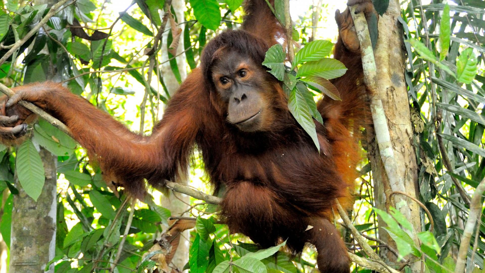

Statut: En danger critique Population: 800 à 14500 selon l'espèce Habitat: Forêts humides des plaines, forêts de marais et de tourbière en plaine, sur l’île de Sumatra (Indonésie) et de Bornéo (Malaisie et Indonésie) Prédateur: L'Homme Régime alimentaire: Omnivore
L'orang-outan, ce primate fascinant et majestueux, partage environ 97 % de son ADN avec l'homme, ce qui en fait l'un de nos plus proches parents dans le règne animal. Il est reconnu pour sa grande intelligence, sa capacité à utiliser des outils et son comportement social complexe. Malheureusement, les orangs-outans sont gravement menacés, principalement en raison de la destruction de leur habitat. La principale menace pour les orangs-outans est la déforestation massive, principalement due à l'exploitation de l'huile de palme, la récolte de bois et l'agriculture. Les forêts tropicales, leur habitat naturel, disparaissent à un rythme alarmant. Sans ces forêts, les orangs-outans se retrouvent sans abri, sans nourriture et sans possibilité de survie à long terme. De plus, ils sont parfois capturés pour le commerce illégal d'animaux exotiques ou tués par les agriculteurs qui considèrent qu'ils endommagent leurs plantations. La fragmentation de leur habitat rend également difficile la rencontre entre orangs-outans pour se reproduire, ce qui réduit encore leur population. Le changement climatique, avec ses impacts sur les écosystèmes forestiers, ajoute une pression supplémentaire sur ces primates déjà vulnérables. Les efforts de conservation sont essentiels pour sauver les orangs-outans. Cela inclut la protection et la restauration de leurs habitats, des programmes de réhabilitation pour les orangs-outans orphelins ou captifs, et la promotion de pratiques durables comme la culture de l'huile de palme certifiée. La sensibilisation du public et le soutien international sont également cruciaux pour assurer l'avenir de cette espèce en voie de disparition. En fin de compte, la préservation des orangs-outans est non seulement une question de protection de la biodiversité, mais aussi de respect et de préservation de nos propres liens avec la nature. Leur survie dépend de notre capacité à agir de manière responsable et éthique pour la planète que nous partageons. Les orang-outans communiquent à l'aide de cris très distinctifs.